Solar Ray Direction: Coordinate Systems and Angle Conventions
Alejandro Morales
Centre for Crop Systems Analysis - Wageningen University
Note: This document was created in collaboration with Claude Code
Overview
The function rotate_coordinates computes a local coordinate system whose Z axis points in the direction of incoming solar radiation, expressed in the coordinate frame of the 3D scene. You normally do not call this function directly but whenever you create a directional light source from azimuth and zenith angles (e.g., when creating the light sources in the sky from SkyDomes.jl, this function is called internally).
Five angles fully describe the geometry:
| Symbol | Name |
|---|---|
| θ | Solar zenith angle |
| Φ | Solar azimuth angle |
| α | Azimuth of scene X axis |
alpha_soil | Slope inclination |
beta_soil | Azimuth of slope normal |
All five are geocentric angles — defined with respect to a fixed horizontal reference frame on the Earth's surface. The scene can be tilted and rotated freely; the solar angles are always measured the same way.
The Three Coordinate Systems
1. Geocentric Coordinate System (GCS)
The fixed reference frame. All input angles are defined in this system.
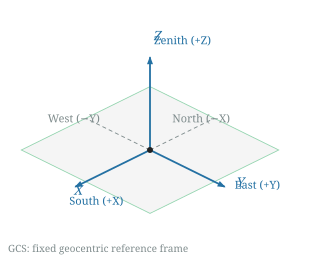
| Axis | Direction | Notes |
|---|---|---|
| +X | South | Geographic south |
| +Y | East | Geographic east |
| +Z | Zenith | Away from Earth's centre |
The GCS is never used directly by the ray tracer — it is only the frame in which the input angles are specified.
2. Scene Coordinate System (SCS)
The coordinate frame of the 3D mesh (PGP.X, PGP.Y, PGP.Z). This is what the user builds their geometry in.
For a flat, default-oriented scene (α = π, alpha_soil = 0) the SCS and GCS coincide. When α ≠ π the X axis is rotated to a different compass bearing, for example to simulate East–West crop rows (right panel):
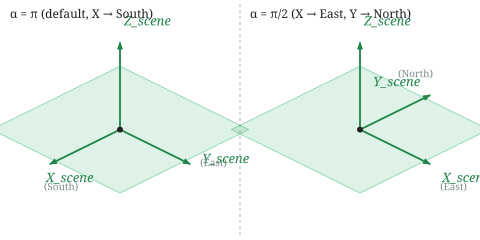
When alpha_soil > 0 the entire XY plane is tilted relative to horizontal, representing a slope. The Z axis of the SCS is then the outward normal to the slope surface, no longer aligned with the geocentric zenith:
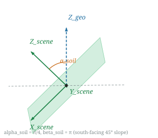
3. Local Coordinate System (LCS)
The output of rotate_coordinates. Defines the solar illumination geometry.
(x, y, z) = rotate_coordinates(θ, Φ, α, alpha_soil, beta_soil)| LCS axis | Meaning |
|---|---|
z | Direction of solar rays (from sun toward scene), expressed in SCS |
x, y | Span the plane perpendicular to z (used for Lambertian hemisphere sampling) |
Only the z component is used by FixedSource. All three axes are used by LambertianSource to sample random directions within a hemisphere via polar_to_cartesian.
The three axes always form a right-handed orthonormal basis.
Angle Reference
Solar Zenith Angle θ
Angle between the sun and the geocentric vertical (Z_geo). Zero when the sun is directly overhead (of a flat surface); π/2 at sunrise and sunset.
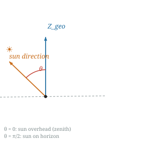
| θ | Sun position |
|---|---|
| 0 | Directly overhead |
| π/6 | 60° elevation |
| π/4 | 45° elevation |
| π/3 | 30° elevation |
| π/2 | On the horizon |
Solar Azimuth Angle Φ
Horizontal compass direction of the sun, measured clockwise from North when viewed from above.
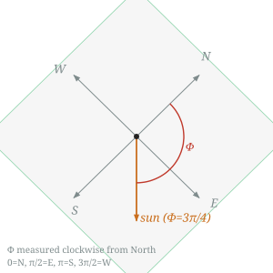
| Φ | Sun is in the direction of |
|---|---|
| 0 | North |
| π/2 | East |
| π | South |
| 3π/2 | West |
A sun at (θ, Φ) = (π/2, 0) sits on the northern horizon; rays travel horizontally toward the South (+X in GCS).
Scene X-Axis Azimuth α
Geocentric azimuth of the scene's X axis. Controls the orientation of the crop rows relative to the compass. α is always the azimuth of the projection of X_scene onto the horizontal GCS plane.
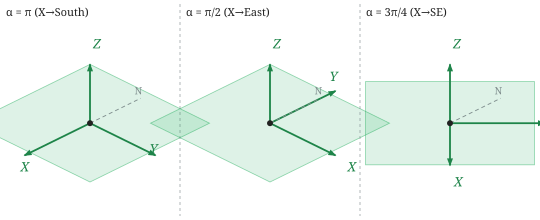
For a flat surface, Y_scene has azimuth α − π/2 (90° counterclockwise from X when viewed from above, right-hand rule with Z up).
| α | X_scene | Y_scene | Typical use |
|---|---|---|---|
| π | South | East | North–South rows (default) |
| π/2 | East | North | East–West rows |
| 0 | North | West | North–South rows (reversed) |
| 3π/4 | Southeast | Northeast | Diagonal rows |
Slope Inclination alpha_soil
Angle between Zscene (the slope's outward normal) and Zgeo (the geocentric vertical). Equivalently, the dip angle of the surface from horizontal.
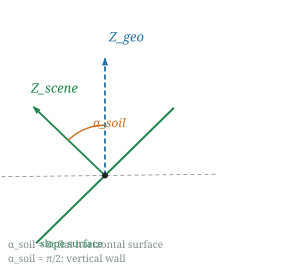
alpha_soil | Surface |
|---|---|
| 0 | Flat horizontal (default) |
| π/6 | Gentle slope (~17°) |
| π/4 | Moderate slope (45°) |
| π/3 | Steep slope (~60°) |
| π/2 | Vertical wall |
When alpha_soil = 0 the result is identical to the flat-surface case and beta_soil has no effect.
Slope Orientation beta_soil
Geocentric azimuth of the slope's outward normal (Z_scene) projected onto the horizontal plane. This is the compass direction the slope faces (a ball placed on the slope rolls in the opposite direction).
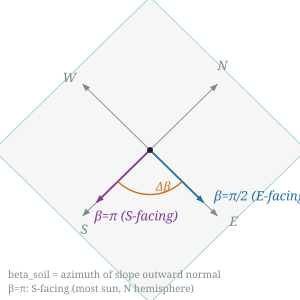
beta_soil | Slope faces | Notes |
|---|---|---|
| π | South (default) | Most sunlit in northern hemisphere |
| 0 | North | Least sunlit in northern hemisphere |
| π/2 | East | Morning sun |
| 3π/2 | West | Afternoon sun |
Scenario Diagrams
Scenario A: Flat surface, sun at arbitrary (θ, Φ)
The standard case. The LCS z-axis (solar ray direction in SCS) is:
z_ray = [ sin θ cos Φ, −sin θ sin Φ, −cos θ ] (for α = π)Side view when Φ = π (sun from South), looking from East:
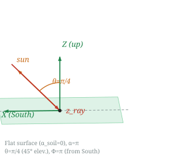
Top-down views for the four cardinal horizon directions (θ = π/2):
North horizon (Φ=0) East horizon (Φ=π/2)
ray → (1, 0, 0) ray → (0, −1, 0)
N N
↓ ← ray travels S │
W ───┼─── E W ←────┼─── E
│ │ ← ray travels W (–Y)
S S
South horizon (Φ=π) West horizon (Φ=3π/2)
ray → (−1, 0, 0) ray → (0, 1, 0)
N N
↑ ← ray travels N │
W ───┼─── E W ─────┼──→ E
│ │ ← ray travels E (+Y)
S SScenario B: Flat surface, rows oriented East–West (α = π/2)
The SCS is rotated so that X points East and Y points North. The same sun produces a different LCS z-axis when expressed in this rotated frame.
Example: sun on the North horizon (θ = π/2, Φ = 0).
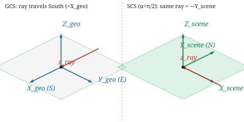
In GCS the ray goes South (+Xgeo). In the α = π/2 SCS, South = −Yscene, so the ray is (0, −1, 0) in SCS coordinates.
Scenario C: South-facing slope (betasoil = π, alphasoil = π/4)
The slope descends toward the South. The outward normal Zscene is tilted 45° from vertical toward South (+Xgeo direction).
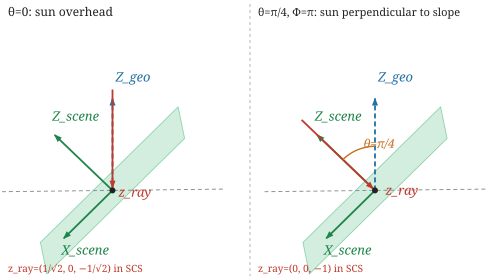
Sun overhead (θ = 0): the geocentric ray is (0, 0, −1). In the tilted SCS it has equal South (+Xscene) and downward (−Zscene) components.
z_ray = (1/√2, 0, −1/√2)
↑ ↑
+X_scene −Z_scene
(down slope) (into surface)Viewed along the slope, the overhead sun hits at 45° from the slope normal — equal to the slope inclination itself.
Sun directly facing the slope (θ = π/4, Φ = π): the geocentric ray aligns with the inward slope normal. The sun illuminates the slope perpendicularly.
z_ray = (0, 0, −1) ← straight into the slope normalThis case is the right-hand panel of the figure above.
Sun on the East horizon (θ = π/2, Φ = π/2): the East direction is perpendicular to the North–South tilt axis. The slope tilt has no effect.
z_ray = (0, −1, 0) ← same as for a flat surfaceScenario D: North-facing slope (betasoil = 0, alphasoil = π/4)
The slope descends toward the North. The outward normal Zscene tilts 45° toward North (−Xgeo direction).
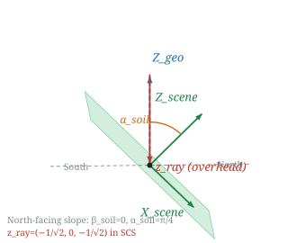
Sun overhead (θ = 0):
z_ray = (−1/√2, 0, −1/√2)
↑ ↑
−X_scene −Z_scene
(down the slope, (into surface)
toward North)The overhead sun hits the North-facing slope from the South side of the slope normal — opposite to Scenario C.
The Rotation Sequence
rot = RotZ(α − beta_soil) ∘ RotY(−alpha_soil) ∘ RotZ(beta_soil − π − Φ) ∘ RotY(−θ)
result = (x = .−rot(X), y = .−rot(Y), z = .−rot(Z))The four elementary rotations are applied right to left (innermost first):
Starting vector: [0, 0, 1] (geocentric zenith)
│
▼
Step 1 — RotY(−θ)
Tilt toward North (−X) by the solar zenith angle.
Result: [−sin θ, 0, cos θ]
│
▼
Step 2 — RotZ(beta_soil − π − Φ)
Rotate around Z combining the solar azimuth (−Φ term) with the
slope orientation (beta_soil − π term). For a flat default surface
this is simply RotZ(−Φ).
│
▼
Step 3 — RotY(−alpha_soil)
Tilt by the slope inclination. Identity when alpha_soil = 0.
│
▼
Step 4 — RotZ(α − beta_soil)
Rotate within the slope plane to put the X axis at geocentric azimuth α.
Identity when α = beta_soil.
│
▼
Negate all three components → solar ray direction (from sun toward scene)Simplifications
| Condition | Simplified formula |
|---|---|
Flat surface (alpha_soil = 0) | RotZ(α − π − Φ) ∘ RotY(−θ) |
| Flat + default orientation (α = π) | RotZ(−Φ) ∘ RotY(−θ) |
Analytical form for flat surfaces
For alpha_soil = 0, the solar ray direction in SCS has a closed form:
z_ray = [ −sin θ cos(Φ − α), sin θ sin(Φ − α), −cos θ ]For the default α = π this simplifies to:
z_ray = [ sin θ cos Φ, −sin θ sin Φ, −cos θ ]Reference Tables
Flat surface, default orientation (α = π, alpha_soil = 0)
| θ | Φ | z_ray in SCS | Physical meaning |
|---|---|---|---|
| 0 | any | (0, 0, −1) | Overhead sun, rays straight down |
| π/2 | 0 | (1, 0, 0) | North horizon → rays toward South |
| π/2 | π/2 | (0, −1, 0) | East horizon → rays toward West |
| π/2 | π | (−1, 0, 0) | South horizon → rays toward North |
| π/2 | 3π/2 | (0, 1, 0) | West horizon → rays toward East |
| π/4 | π | (−1/√2, 0, −1/√2) | 45° elevation from South |
South-facing 45° slope (α = π, alpha_soil = π/4, beta_soil = π)
| θ | Φ | z_ray in SCS | Physical meaning |
|---|---|---|---|
| 0 | any | (1/√2, 0, −1/√2) | Overhead sun, 45° from slope normal |
| π/4 | π | (0, 0, −1) | Sun perpendicular to slope surface |
| π/2 | 0 | (1/√2, 0, 1/√2) | North horizon → hits back face of slope |
| π/2 | π/2 | (0, −1, 0) | East horizon → same as flat |
Effect of α on a south-facing 45° slope (alpha_soil = π/4, beta_soil = π)
| θ | Φ | α | z_ray in SCS | Notes |
|---|---|---|---|---|
| 0 | any | π | (1/√2, 0, −1/√2) | X points South |
| 0 | any | π/2 | (0, −1/√2, −1/√2) | X points East |
Common Pitfalls
alpha_soil = 0 makes beta_soil irrelevant. When the surface is flat the tilt step (Step 3) is the identity and Step 4 cancels with the extra offset in Step 2. beta_soil can be set to anything.
z_ray with a positive Z component. A positive Z component means the solar ray is striking the back face of the slope (the sun is below the slope's local horizon). This means direct solar radiation will not reach the crops (but part of the diffuse solar radiation will).
α is a geocentric azimuth, not an in-slope-plane angle. Even on a tilted surface, α is the azimuth of X_scene projected onto the horizontal GCS plane — not an angle measured within the slope. Two slopes with different inclinations but the same α will have their X axes projecting to the same compass direction.
Solar azimuth convention. Φ = 0 is geographic North (not East as in some meteorological conventions). The azimuth increases clockwise when viewed from above.